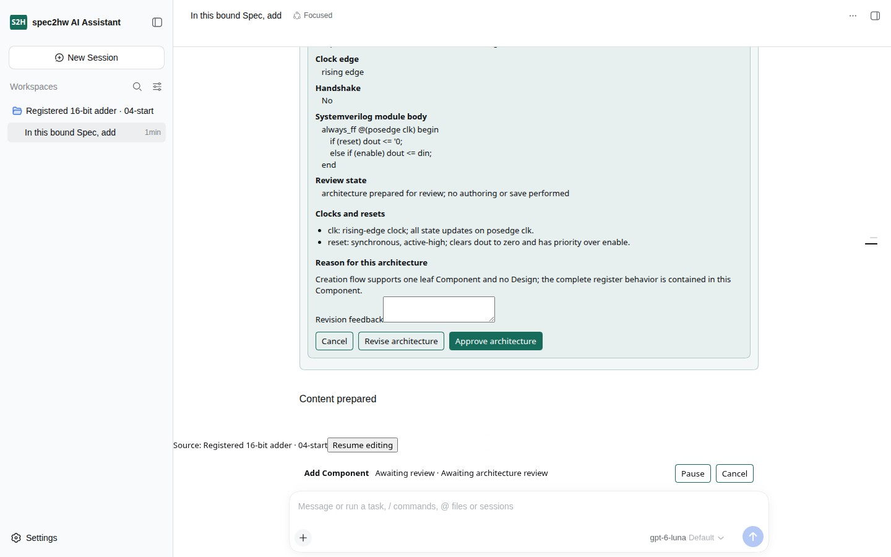

CORE 04 / 09 · GUIDED PRACTICE
Create a Component with AI Assistant
Review an architecture and inspect the register that the Assistant saves.
Before you start
Spec Editor, AI Assistant, and configured model credentials. The prepared start already contains the completed adder.
Read each action, do it, then compare the expected result before continuing. Use a fresh prepared start to retry. Reading time and automated execution time are not measured learner practice time.
Actions
Check the intended document
Open04-start.spec. Record its path and confirm that the adder is present.Expected result: This Spec will receive the register. It already contains the completed adder.
Launch a bound conversation
Select AI Assistant ↗ in Spec Editor. Inspect the document context in the Assistant.Expected result: A separate conversation is bound to this exact Spec. Selecting another Spec later does not retarget it.
Read and send the request
Read the complete request below, copy it, and submit it in the Assistant.In this bound Spec, add one new Component named Enabled 16-bit register. Do not create another Spec or change the adder. Prepare the architecture for my review before authoring. On each rising clk edge, reset=1 clears dout to zero. Otherwise enable=1 captures din. Otherwise dout holds its value. Reset is synchronous and active high. Reset has priority over enable. There is no ready/valid handshake. Physical wire ports: clk: in, scalar; Rising-edge clock. reset: in, scalar; Synchronous active-high reset; highest priority. enable: in, scalar; Capture din when reset is zero. din: in, 15:0; Unsigned data to capture. dout: out, 15:0; Registered output. Use this SystemVerilog module body: always_ff @(posedge clk) begin if (reset) dout <= '0; else if (enable) dout <= din; end After approval, save the complete Component through the Spec service. Report its saved result or pending review state.Expected result: The request names five ports, reset behavior, enable behavior, and the required module body.
Wait for architecture review
Follow the flow progress until the architecture review appears.Expected result: A proposed architecture is ready for a designer decision. No saved register is implied yet.
Check the interface
Compare the proposed ports with the table below. Reject extra clocks, resets, or status ports.Port ID Direction Range Description clk in Leave blank (scalar) Rising-edge clock. reset in Leave blank (scalar) Synchronous active-high reset; highest priority. enable in Leave blank (scalar) Capture din when reset is zero. din in 15:0 Unsigned data to capture. dout out 15:0 Registered output. Expected result: The proposed interface has exactly clk, reset, enable, din, and dout with the listed directions and ranges.
Check the behavior
Confirm rising-edge clocking, synchronous active-high reset, reset priority, capture when enabled, and hold when disabled.Expected result: The architecture agrees with the requested hardware.

Review the enabled-register architecture before approving it. Select the image to view its full size. Make the architecture decision
Use Approve architecture only when the proposal agrees. Otherwise use Revise with specific feedback, or Cancel.Expected result: Approval authorizes this architecture; it does not itself save authored content.
Inspect execution and receipt
Wait for the confirmed service result. In automatic mode valid content saves after authoring. If a content proposal is pending, follow the restricted-review guide.Expected result: The result identifies a saved change, a pending decision, or a failure. Do not treat pending content as saved.
Compare saved content
Return to Spec Editor and inspect Enabled 16-bit register: explanation, ports, and SystemVerilog.always_ff @(posedge clk) begin if (reset) dout <= '0; else if (enable) dout <= din; endExpected result: The saved register agrees with the requested reset, capture, and hold behavior. The adder is retained.

Check the saved register interface and implementation in Spec Editor. Select the image to view its full size. Verify and reopen
Run Verify Component if Verilator is available, inspect Diagnostics, then reopen the same Spec.Expected result: The register persists independently of the Assistant’s prose. Lint and functional verification remain distinct.

Check your result
The same Spec contains the unchanged adder and the enabled register. The saved register implements reset, capture, and hold exactly as requested.
Try it yourself
Ask the bound Assistant to explain why reset has priority over enable. Compare its explanation with the saved body.
If it fails
If no model key is configured, stop this exercise and open 05-start.spec to continue. The checkpoint supplies the register. If an operation is rejected, inspect the diagnostic and saved source before submitting a fresh request.
Continue
NEXT GUIDECompose a Design from ComponentsReference: ai assistant · Complete example